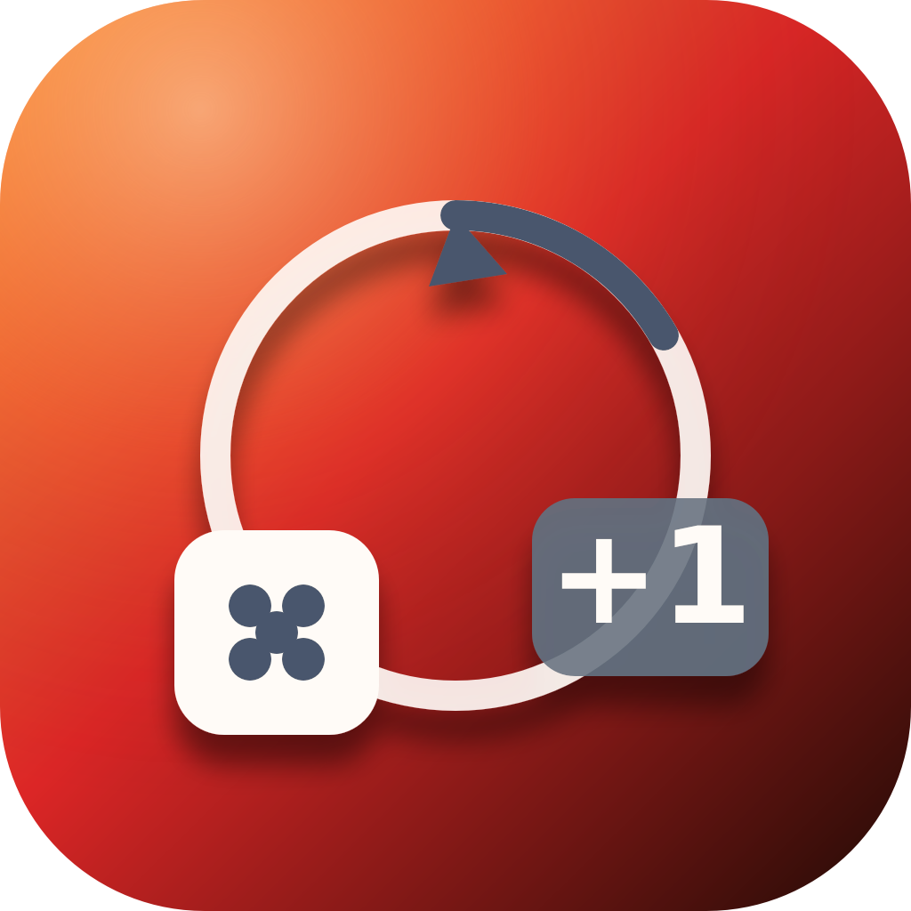

GitoCorp Studios
Turno+
El contador, la ruleta y los dados que sustituyen a la libreta en cualquier partida.
Contadores para cada juego
Plantillas estándar o creadas con el asistente.
Ruleta para decidir quién empieza
Grupos guardados y animación real de giro.
Dados virtuales de varias caras
Tira uno o varios a la vez, sin buscar los físicos.
Un marcador para cada juego.
Turno+ nace como complemento de Noche de Juegos: un contador flexible que se adapta al juego concreto en lugar de obligarte a encajarlo en un marcador genérico.
Asistente de creación
Responde unas preguntas sencillas sobre cómo se puntúa tu juego y Turno+ construye el marcador adecuado: rondas acumulativas, cantidad que baja hasta cero, vidas, acarreo por grupos y más.
Ruleta de turnos
Decide quién empieza con una ruleta animada, guarda grupos de jugadores habituales y elige entre distintos temas de color.
Dados virtuales
Dados de 4, 6, 12 o 20 caras con animación de tirada real, para jugar sin depender de los dados físicos.
Privacidad de Turno+
Los marcadores, grupos de jugadores y partidas se guardan para que puedas retomarlos y consultar tu historial. Algunas funciones pueden consultar BoardGameGeek para completar información pública de un juego al crear un contador nuevo.